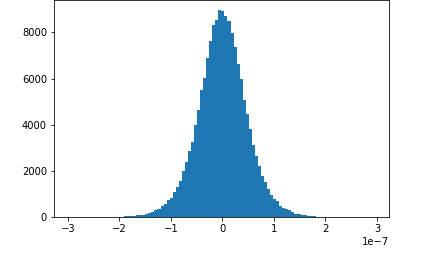
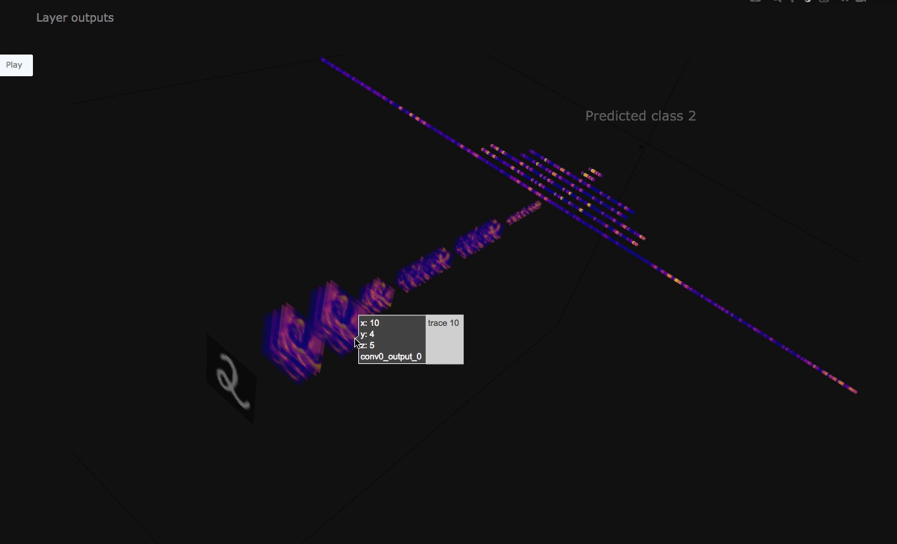

Configure SageMaker Debugger to Save Tensors
Tensors are data collections of updated parameters from the
backward and forward pass of each training iteration. SageMaker Debugger collects the
output tensors to analyze the state of a training job. SageMaker Debugger's CollectionConfigDebuggerHookConfig
Note
After properly configured and activated, SageMaker Debugger saves the output tensors in a
default S3 bucket, unless otherwise specified. The format of the default S3 bucket
URI is
s3://sagemaker-<region>-<12digit_account_id>/<training-job-name>/debug-output/.
While constructing a SageMaker estimator, activate SageMaker Debugger by specifying the
debugger_hook_config parameter. The following steps include examples of
how to set up the debugger_hook_config using the
CollectionConfig and DebuggerHookConfig API operations to
pull tensors out of your training jobs and save them.
Configure Tensor Collections
Using the CollectionConfig API
Use the CollectionConfig API operation to configure tensor
collections. Debugger provides pre-built tensor collections that cover a variety of
regular expressions (regex) of parameters if using Debugger-supported deep learning
frameworks and machine learning algorithms. As shown in the following example code,
add the built-in tensor collections you want to debug.
from sagemaker.debugger import CollectionConfig collection_configs=[ CollectionConfig(name="weights"), CollectionConfig(name="gradients") ]
The preceding collections set up the Debugger hook to save the tensors every 500
steps based on the default "save_interval" value.
For a full list of available Debugger built-in collections, see Debugger Built-in Collections
If you want to customize the built-in collections, such as changing the save
intervals and tensor regex, use the following CollectionConfig template
to adjust parameters.
from sagemaker.debugger import CollectionConfig collection_configs=[ CollectionConfig( name="tensor_collection", parameters={ "key_1": "value_1", "key_2": "value_2", ... "key_n": "value_n" } ) ]
For more information about available parameter keys, see CollectionConfig
from sagemaker.debugger import CollectionConfig collection_configs=[ CollectionConfig( name="losses", parameters={ "train.save_interval": "100", "eval.save_interval": "10" } ) ]
Tip
This tensor collection configuration object can be used for both DebuggerHookConfig and Rule API operations.
Configure the
DebuggerHookConfig API to Save Tensors
Use the DebuggerHookConfigdebugger_hook_config
object using the collection_configs object you created in the previous
step.
from sagemaker.debugger import DebuggerHookConfig debugger_hook_config=DebuggerHookConfig( collection_configs=collection_configs)
Debugger saves the model training output tensors into the default S3 bucket. The
format of the default S3 bucket URI is
s3://sagemaker-<region>-<12digit_account_id>/<training-job-name>/debug-output/.
If you want to specify an exact S3 bucket URI, use the following code example:
from sagemaker.debugger import DebuggerHookConfig debugger_hook_config=DebuggerHookConfig( s3_output_path="specify-your-s3-bucket-uri" collection_configs=collection_configs)
For more information, see DebuggerHookConfig
Example Notebooks and Code Samples to Configure Debugger Hook
The following sections provide notebooks and code examples of how to use Debugger hook to save, access, and visualize output tensors.
Topics
Tensor Visualization Example Notebooks
The following two notebook examples show advanced use of Amazon SageMaker Debugger for visualizing tensors. Debugger provides a transparent view into training deep learning models.
-
Interactive Tensor Analysis in SageMaker Studio Notebook with MXNet
This notebook example shows how to visualize saved tensors using Amazon SageMaker Debugger. By visualizing the tensors, you can see how the tensor values change while training deep learning algorithms. This notebook includes a training job with a poorly configured neural network and uses Amazon SageMaker Debugger to aggregate and analyze tensors, including gradients, activation outputs, and weights. For example, the following plot shows the distribution of gradients of a convolutional layer that is suffering from a vanishing gradient problem.
This notebook also illustrates how a good initial hyperparameter setting improves the training process by generating the same tensor distribution plots.
-
Visualizing and Debugging Tensors from MXNet Model Training
This notebook example shows how to save and visualize tensors from an MXNet Gluon model training job using Amazon SageMaker Debugger. It illustrates that Debugger is set to save all tensors to an Amazon S3 bucket and retrieves ReLu activation outputs for the visualization. The following figure shows a three-dimensional visualization of the ReLu activation outputs. The color scheme is set to blue to indicate values close to 0 and yellow to indicate values close to 1.
In this notebook, the
TensorPlotclass imported fromtensor_plot.pyis designed to plot convolutional neural networks (CNNs) that take two-dimensional images for inputs. Thetensor_plot.pyscript provided with the notebook retrieves tensors using Debugger and visualizes the CNN. You can run this notebook on SageMaker Studio to reproduce the tensor visualization and implement your own convolutional neural network model. -
Real-time Tensor Analysis in a SageMaker Notebook with MXNet
This example guides you through installing required components for emitting tensors in an Amazon SageMaker training job and using the Debugger API operations to access those tensors while training is running. A gluon CNN model is trained on the Fashion MNIST dataset. While the job is running, you will see how Debugger retrieves activation outputs of the first convolutional layer from each of 100 batches and visualizes them. Also, this will show you how to visualize weights after the job is done.
Save Tensors Using Debugger Built-in Collections
You can use built-in collections of tensors using the CollectionConfig
API and save them using the DebuggerHookConfig API. The following example
shows how to use the default settings of Debugger hook configurations to construct a
SageMaker TensorFlow estimator. You can also utilize this for MXNet, PyTorch, and XGBoost
estimators.
Note
In the following example code, the s3_output_path parameter for
DebuggerHookConfig is optional. If you do not specify it, Debugger
saves the tensors at s3://<output_path>/debug-output/, where the
<output_path> is the default output path of SageMaker training jobs.
For example:
"s3://sagemaker-us-east-1-111122223333/sagemaker-debugger-training-YYYY-MM-DD-HH-MM-SS-123/debug-output"
import sagemaker from sagemaker.tensorflow import TensorFlow from sagemaker.debugger import DebuggerHookConfig, CollectionConfig # use Debugger CollectionConfig to call built-in collections collection_configs=[ CollectionConfig(name="weights"), CollectionConfig(name="gradients"), CollectionConfig(name="losses"), CollectionConfig(name="biases") ] # configure Debugger hook # set a target S3 bucket as you want sagemaker_session=sagemaker.Session() BUCKET_NAME=sagemaker_session.default_bucket() LOCATION_IN_BUCKET='debugger-built-in-collections-hook' hook_config=DebuggerHookConfig( s3_output_path='s3://{BUCKET_NAME}/{LOCATION_IN_BUCKET}'. format(BUCKET_NAME=BUCKET_NAME, LOCATION_IN_BUCKET=LOCATION_IN_BUCKET), collection_configs=collection_configs ) # construct a SageMaker TensorFlow estimator sagemaker_estimator=TensorFlow( entry_point='directory/to/your_training_script.py', role=sm.get_execution_role(), base_job_name='debugger-demo-job', instance_count=1, instance_type="ml.p3.2xlarge", framework_version="2.9.0", py_version="py39", # debugger-specific hook argument below debugger_hook_config=hook_config ) sagemaker_estimator.fit()
To see a list of Debugger built-in collections, see Debugger Built-in Collections
Save Tensors Using Debugger Modified Built-in Collections
You can modify the Debugger built-in collections using the CollectionConfig
API operation. The following example shows how to tweak the built-in losses
collection and construct a SageMaker TensorFlow estimator. You can also use this for MXNet,
PyTorch, and XGBoost estimators.
import sagemaker from sagemaker.tensorflow import TensorFlow from sagemaker.debugger import DebuggerHookConfig, CollectionConfig # use Debugger CollectionConfig to call and modify built-in collections collection_configs=[ CollectionConfig( name="losses", parameters={"save_interval": "50"})] # configure Debugger hook # set a target S3 bucket as you want sagemaker_session=sagemaker.Session() BUCKET_NAME=sagemaker_session.default_bucket() LOCATION_IN_BUCKET='debugger-modified-collections-hook' hook_config=DebuggerHookConfig( s3_output_path='s3://{BUCKET_NAME}/{LOCATION_IN_BUCKET}'. format(BUCKET_NAME=BUCKET_NAME, LOCATION_IN_BUCKET=LOCATION_IN_BUCKET), collection_configs=collection_configs ) # construct a SageMaker TensorFlow estimator sagemaker_estimator=TensorFlow( entry_point='directory/to/your_training_script.py', role=sm.get_execution_role(), base_job_name='debugger-demo-job', instance_count=1, instance_type="ml.p3.2xlarge", framework_version="2.9.0", py_version="py39", # debugger-specific hook argument below debugger_hook_config=hook_config ) sagemaker_estimator.fit()
For a full list of CollectionConfig parameters, see Debugger CollectionConfig API
Save Tensors Using Debugger Custom Collections
You can also save a reduced number of tensors instead of the full set of tensors (for example, if you want to reduce the amount of data saved in your Amazon S3 bucket). The following example shows how to customize the Debugger hook configuration to specify target tensors that you want to save. You can use this for TensorFlow, MXNet, PyTorch, and XGBoost estimators.
import sagemaker from sagemaker.tensorflow import TensorFlow from sagemaker.debugger import DebuggerHookConfig, CollectionConfig # use Debugger CollectionConfig to create a custom collection collection_configs=[ CollectionConfig( name="custom_activations_collection", parameters={ "include_regex": "relu|tanh", # Required "reductions": "mean,variance,max,abs_mean,abs_variance,abs_max" }) ] # configure Debugger hook # set a target S3 bucket as you want sagemaker_session=sagemaker.Session() BUCKET_NAME=sagemaker_session.default_bucket() LOCATION_IN_BUCKET='debugger-custom-collections-hook' hook_config=DebuggerHookConfig( s3_output_path='s3://{BUCKET_NAME}/{LOCATION_IN_BUCKET}'. format(BUCKET_NAME=BUCKET_NAME, LOCATION_IN_BUCKET=LOCATION_IN_BUCKET), collection_configs=collection_configs ) # construct a SageMaker TensorFlow estimator sagemaker_estimator=TensorFlow( entry_point='directory/to/your_training_script.py', role=sm.get_execution_role(), base_job_name='debugger-demo-job', instance_count=1, instance_type="ml.p3.2xlarge", framework_version="2.9.0", py_version="py39", # debugger-specific hook argument below debugger_hook_config=hook_config ) sagemaker_estimator.fit()
For a full list of CollectionConfig parameters, see Debugger CollectionConfig